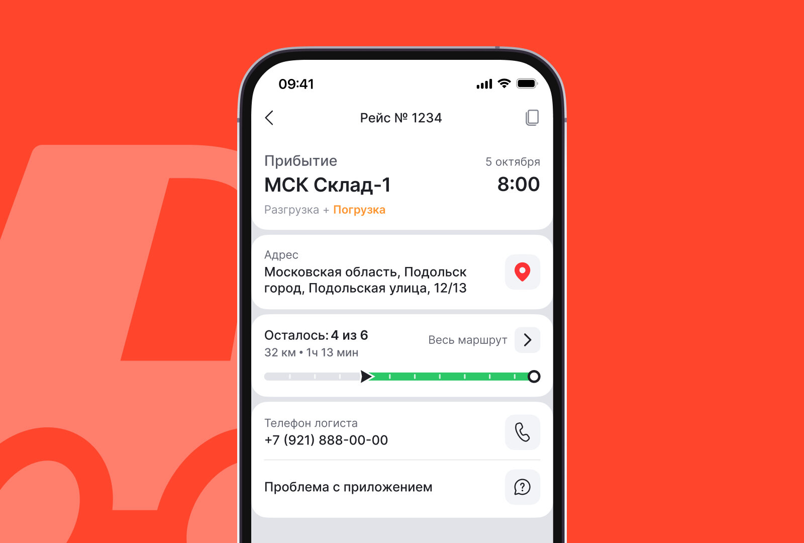
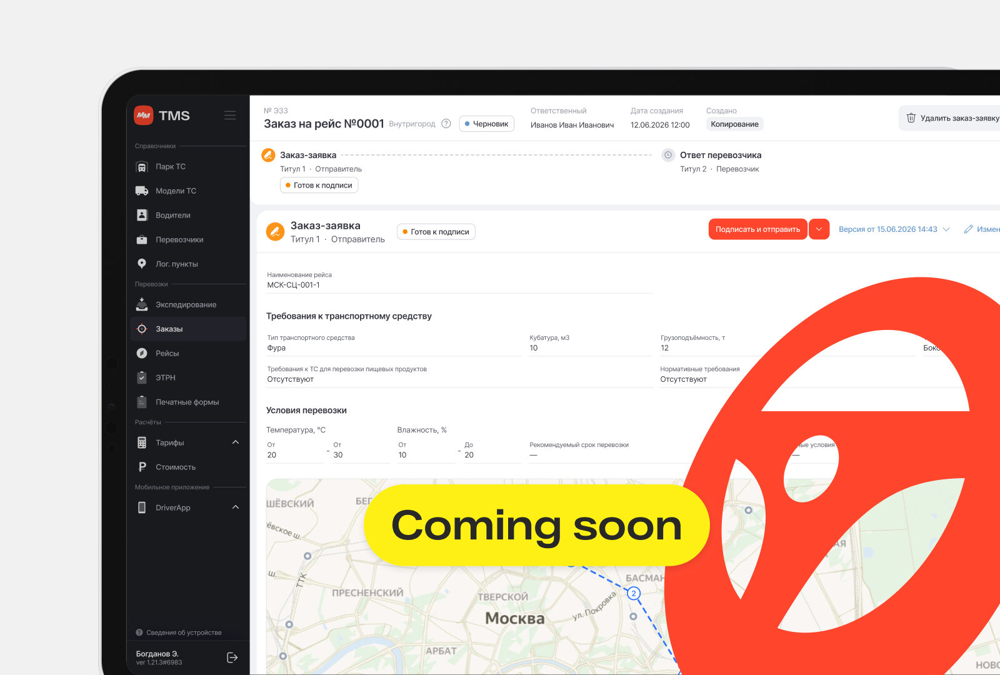
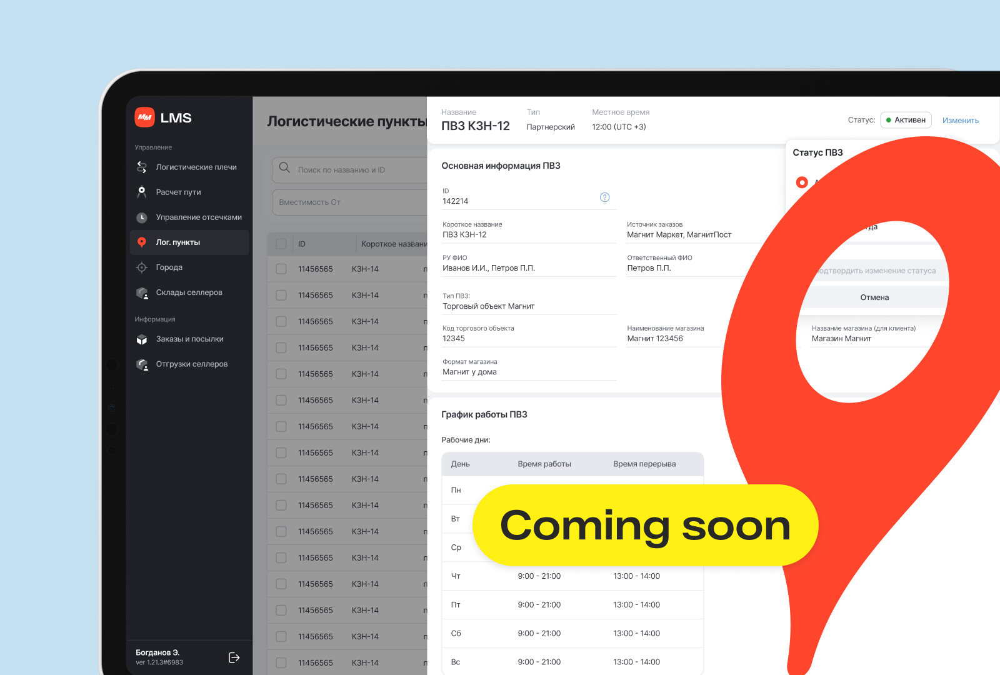
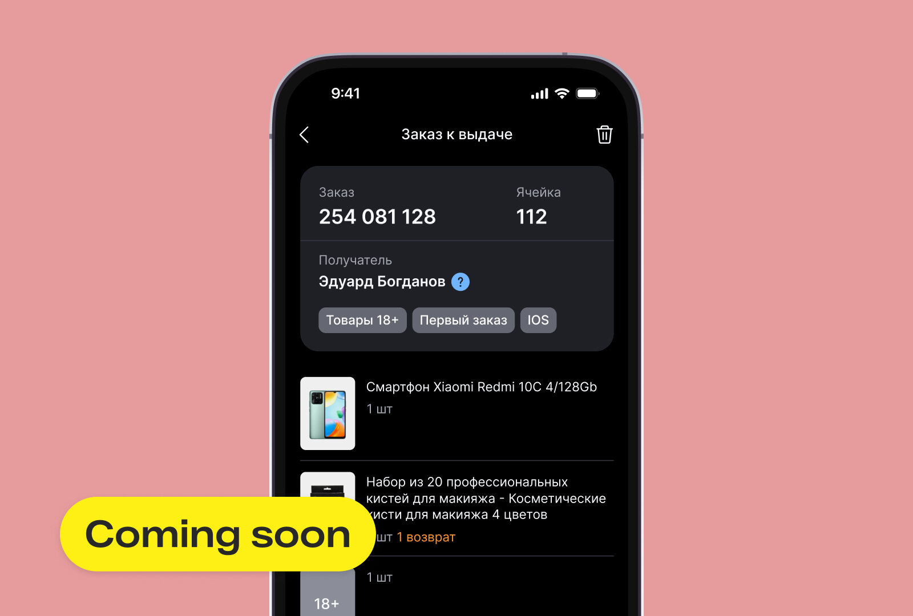
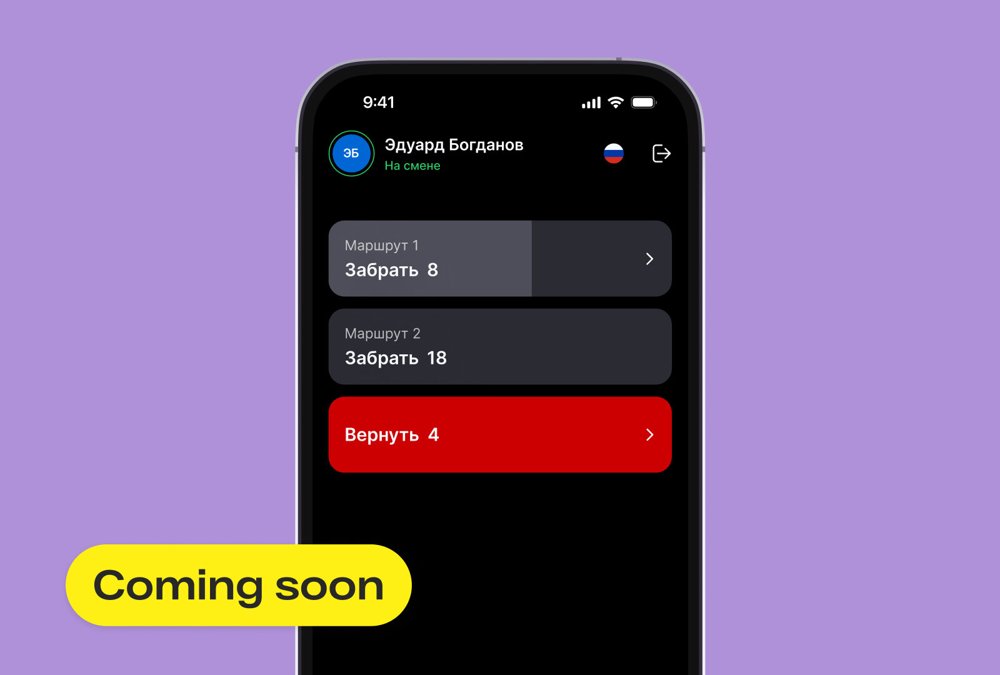
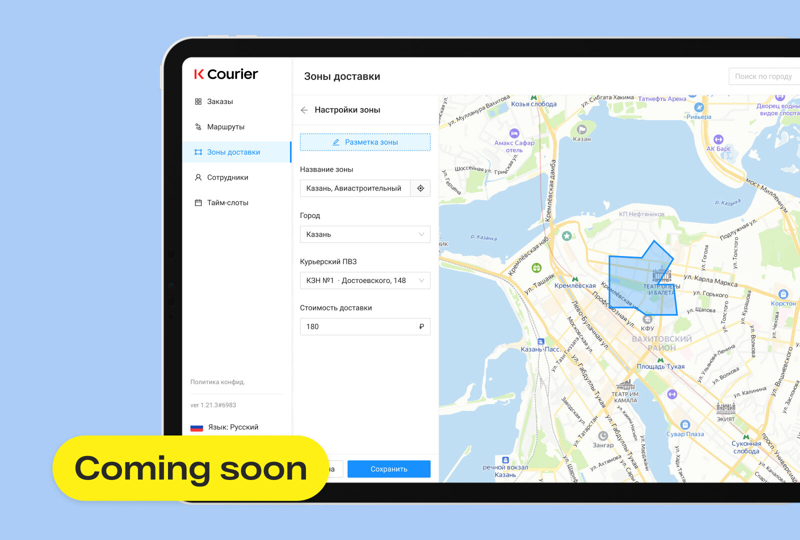
Проектирую сложные продукты с нуля и развиваю существующие.
Погружаюсь в процессы, разбираюсь в предметной области и продумываю продукт целиком — от пользовательских сценариев до интерфейса.
Есть большой опыт в развитии дизайн-систем и проектировании сложных компонентов.
Начинал с графического и веб-дизайна, поэтому сочетаю сильную UX-проработку с вниманием к визуалу и деталям.
Помогаю обучать и развивать младших и средних специалистов.
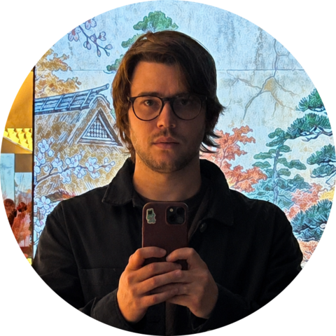
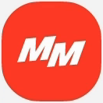
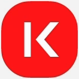
DriverApp — мобильное приложение для водителей Магнит Маркета (сейчас M Post) и часть системы управления транспортом TMS (Transport Management System).
Логист планирует и контролирует рейс в TMS, а водитель получает этот рейс в DriverApp и выполняет его со своей стороны.
На протяжении рейса обе системы работают с одними и теми же данными: подтверждение или отказ водителя, прибытие и отправление с точек и другие события из DriverApp передаются в TMS. В обратную сторону приходят назначенные рейсы и изменения, которые логист вносит в маршрут.
Роль: единственный дизайнер продукта · Магнит Маркет / M Post · 2025–26
Раньше логисты вели рейсы в Excel, а с водителями общались через Telegram. С появлением TMS и DriverApp часть этой работы автоматизировали и перенесли в продукты: водитель сам подтверждает и выполняет рейс в приложении, а логист контролирует его через TMS.
Единственный дизайнер продукта в команде. Проектировал DriverApp с нуля и продолжал развивать его после запуска: исследовал процесс вместе с командой, прорабатывал пользовательские сценарии с аналитиками и бизнесом, проектировал интерфейсы и сопровождал реализацию.
Для начала хотелось понять, как вообще выглядит обычный день водителя и что происходит с рейсом в реальности. Поэтому мы ездили на склад и несколько раз катались с водителями по маршрутам: смотрели, как проходит погрузка и разгрузка, что происходит на ПВЗ, с какими документами они работают и как общаются с логистами.
НаблюдениеОказалось, что реальный рейс не всегда идёт строго по плану. Например, ПВЗ могут открываться в разное время, где-то идёт ревизия, где-то появляется новая точка — поэтому иногда водитель меняет порядок и едет не так, как точки стоят в маршруте. Так же на некоторых точках водитель ещё забирает возвратный груз.
Основным документом был бумажный АПП: по нему водитель сверял груз при погрузке, с ним же работал на ПВЗ.
Большая часть коммуникации с логистами происходила в Telegram. Там водитель узнавал об изменениях, подтверждал рейс, писал о загрузке и сообщал о завершении работы. Логисты пробовали перенести часть этого процесса в Telegram-бота, но в итоге водители всё равно продолжали пользоваться общим чатом.
НаблюдениеЗа общим чатом не всегда получалось следить, особенно во время рейса. Водителю приходилось постоянно на него отвлекаться, а важные изменения могли просто потеряться среди других сообщений.
Взяли за основу флоу Яндекс и Ozon, адаптировали под свои требования, убрали шаги со сканированием QR-кодов, фото документов и навигатором. Оставили только фиксацию времени событий.
На основе всего, что узнали, собрали упрощённый сценарий первой версии приложения. С него и начали проектирование.
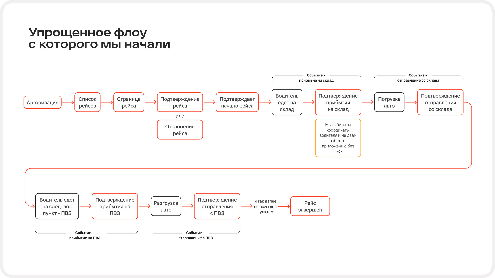
Для первого входа предусмотрено обязательное ознакомление с инструкцией — это нужно и для понимания процесса водителем, и по юридическим требованиям.
Инструкцию также сверстал самостоятельно на Tilda.
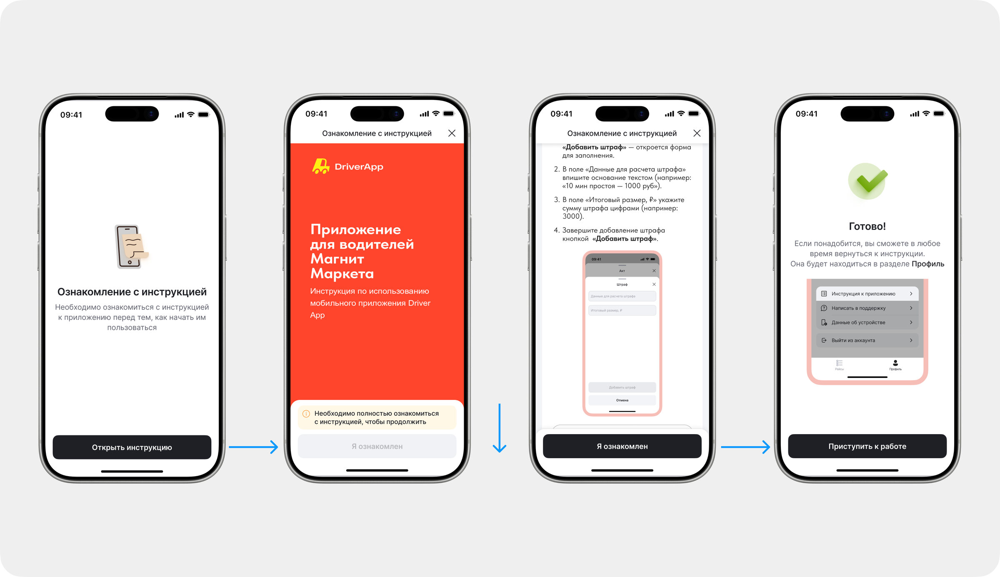
После того как логист спланирует и назначит рейс в TMS, он появляется у водителя в DriverApp.
И первый раздел приложения — это как раз список рейсов, назначенных водителю. Они разделены на ближайший и предстоящие, но находятся на одном экране, чтобы водитель сразу видел всё и не переключался между разделами.
Далее водитель должен подтвердить рейс. Подтверждение мы специально разместили внутри рейса: сначала водитель открывает его, знакомится с маршрутом и только после этого подтверждает.
Если водитель понимает, что не сможет выполнить рейс, он может его отклонить, указав причину. Информация об отказе появится в мониторинге рейсов в TMS, где логист сможет найти замену, чтобы рейс не сорвался.
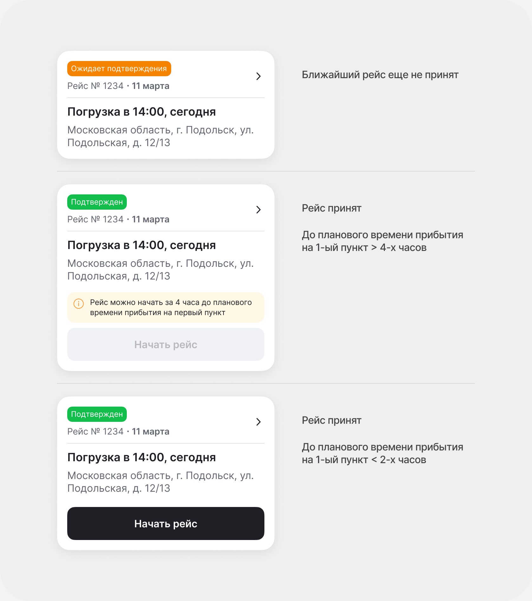
После начала рейса водитель переходит к его выполнению. На странице рейса собрали всё необходимое для работы с маршрутом и отметок на каждой точке.
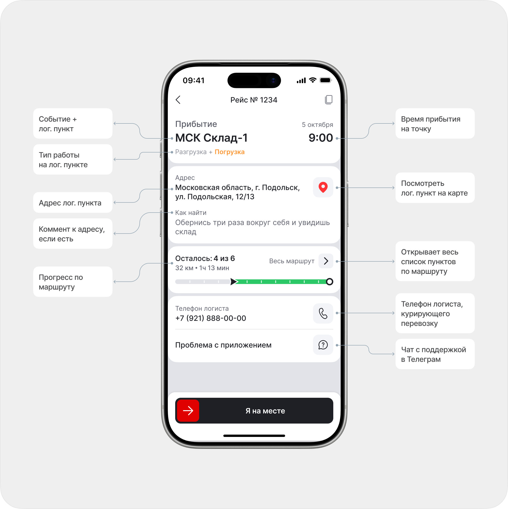
Первое событие и первая точка в маршруте — это всегда погрузка на складе. Как только водитель приезжает на склад, он отмечается «Я на месте». Координаты и время улетают в TMS.
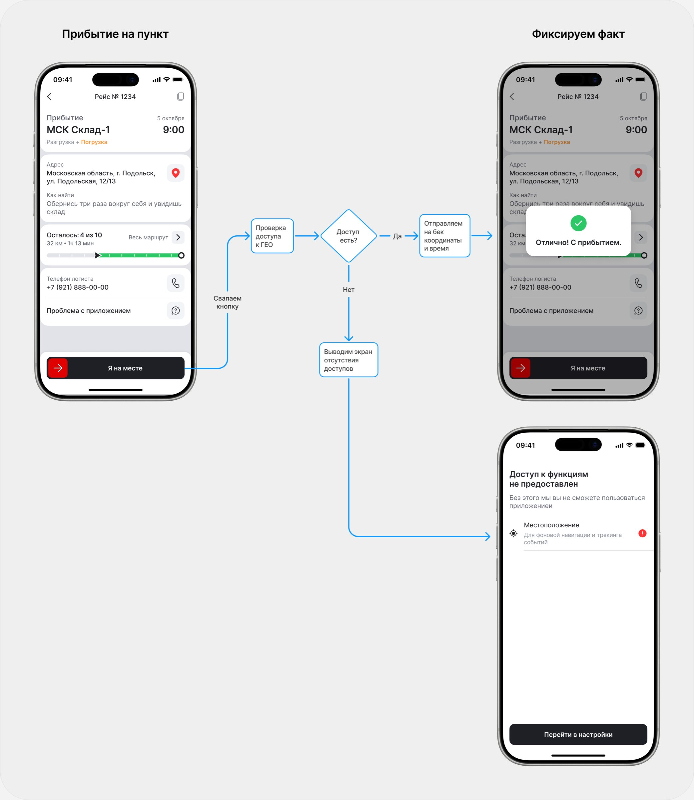
После того, как водитель отметился о прибытии на точку, событие сменяется на отправление с точки и так далее.
По мере прохождения маршрута прогресс убывает, пока в конце водитель не завершает рейс (это по сути отправление с последней точки).
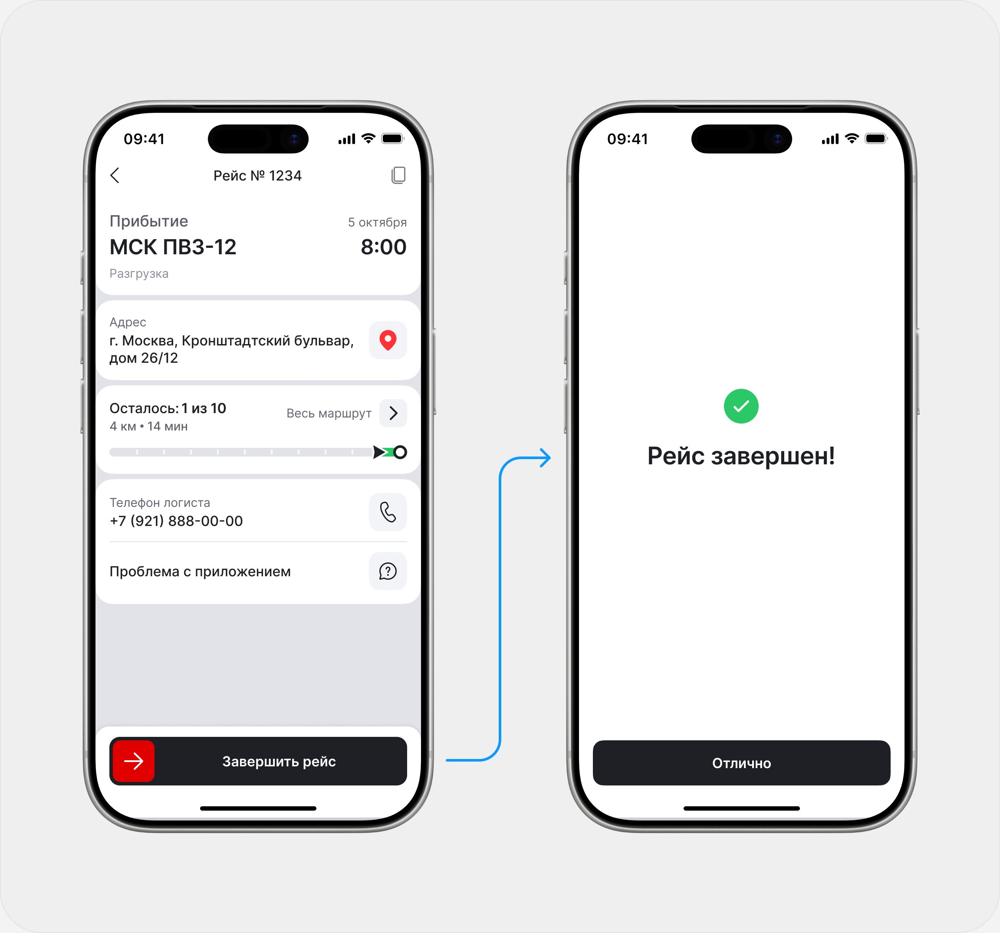
Почему такой прогрессМы проводили опросы и интервью с водителями, и большинству привычен именно убывающий прогресс — по аналогии с такси или навигатором.
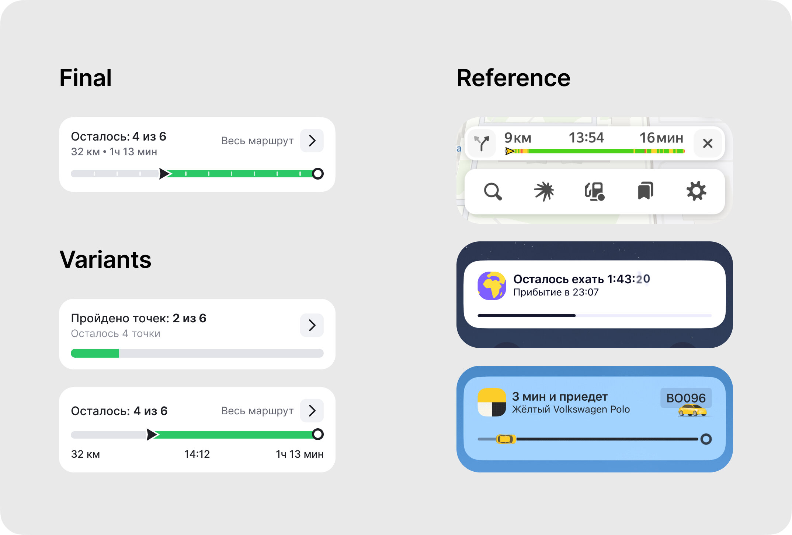
DriverApp и TMS работают с одним рейсом на протяжении всего его жизненного цикла. Водитель выполняет рейс через мобильное приложение, а логист контролирует его и при необходимости управляет им через TMS.
Когда водитель отмечает прибытие или отправление в DriverApp, событие передаётся в TMS. В мониторинге логист видит плановое и фактическое время по каждой точке маршрута, а также кем была поставлена отметка — водителем или логистом.
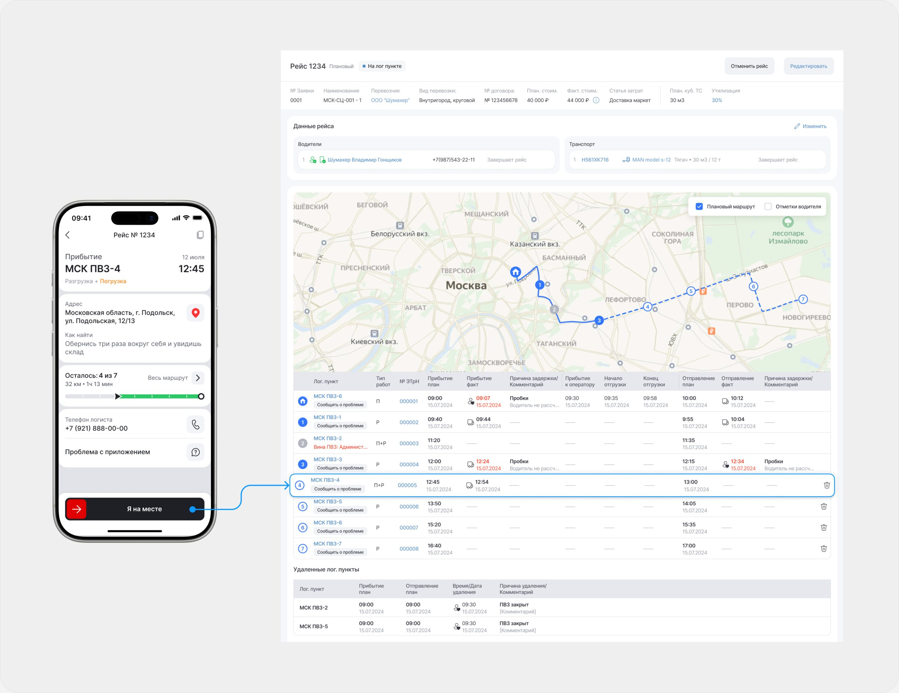
До и во время рейса маршрут может измениться. Через TMS логист может добавить или удалить точку, поменять порядок точек или полностью отменить рейс. DriverApp получает изменения, а водитель — уведомление об обновлении рейса.
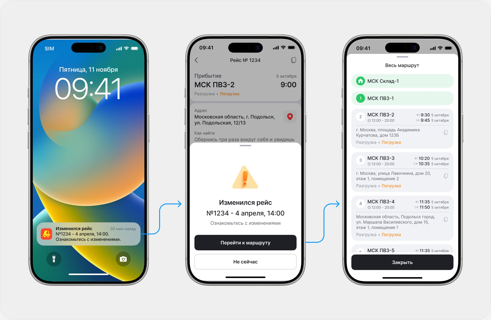
В штатном сценарии все события отмечает водитель. Но в дороге может пропасть интернет, возникнуть проблема с телефоном и т.п., из-за чего водитель не сможет поставить отметку.
Поэтому логист тоже может отмечать прибытие или отправление через TMS. Это позволяет не останавливать рейс в системе и сохранить фактические события для мониторинга и аналитики.
Мы учитывали ситуации, когда, например, водитель нажимает «Я на месте», а логист уже успел отметить его прибытие в TMS.
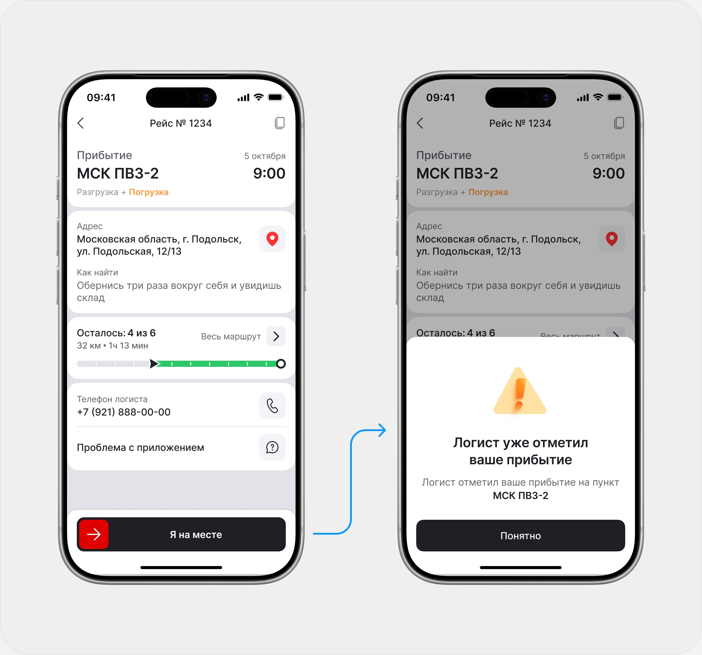
Продумали и технические состояния, которые могут возникнуть: пропало соединение, устарела версия приложения, возникла ошибка или работе мешает VPN. В каждом случае водитель понимает, что произошло и что делать дальше.
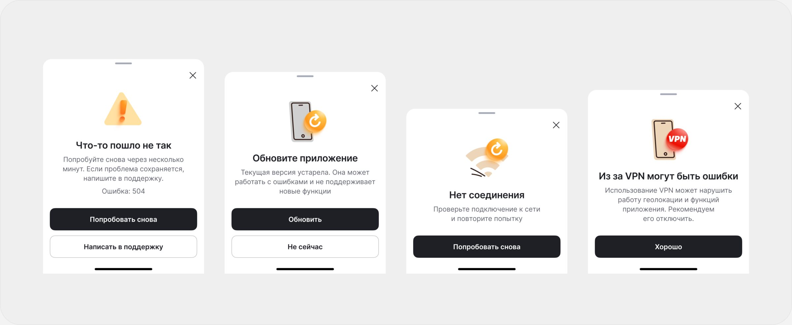
Когда первая рабочая версия была готова, мы снова поехали с водителями — на этот раз уже проверять приложение в реальном рейсе.
Разделились на две команды и поехали с двумя водителями. Водители проходили маршрут через DriverApp и отмечали прибытие и отправление на точках, а мы параллельно сидели с ноутбуками в мониторинге TMS и проверяли, как события приходят и отображаются у логиста.
В нашем рейсе всё прошло нормально, а у второй команды проявились технические проблемы с передачей событий. Их зафиксировали прямо по ходу поездки и передали в работу.